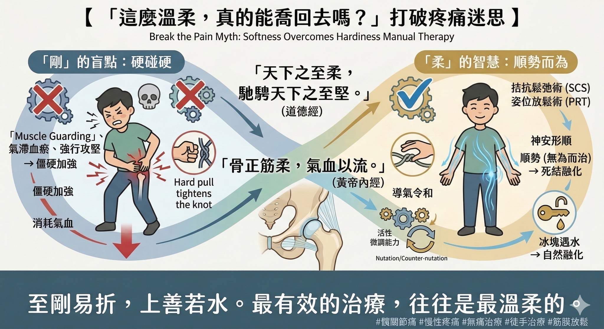

「這麼溫柔，真的能喬回去嗎？」打破越痛越有效的治療迷思
【 「這麼溫柔，真的能喬回去嗎？」打破越痛越有效的治療迷思 】
「醫生，像這麼溫柔的手法，就可以把東西喬回去嗎？」
今天診間來了一位初診患者，深受髖關節疼痛折磨整整一年，實在痛苦不堪。在進行徒手治療時，她感受著極度輕柔的力道，忍不住提出了這個疑問。
這是我常常被問到的問題之一，咦？不是要「喀喀」才有用嗎？
許多人習慣了「硬碰硬」的治療，認為要有疼痛、要聽到骨頭「喀喀」聲響，才叫「有做」。但當治療結束，她起身活動，發現那糾纏一年的髖關節竟然完全不痛時，她眼裡的驚訝，正是對「以柔克剛」最好的見證。
-
☯️ 剛的盲點：強行攻堅，反而氣滯血瘀
為什麼用力硬喬，有時反而越弄越痛？
從現代醫學來看，人體有一套精密的防禦機制（Muscle Guarding）。當身體感受到突如其來的大力道或疼痛時，本能會將其視為危險，瞬間命令肌肉收縮、緊繃來防禦。
如果試圖「用力」攻破防線，身體就會反射性地拚命抵抗。這種對抗不僅消耗氣血，更可能因為過度刺激，造成局部的「氣滯血瘀」，讓組織的防禦性僵硬變得更強。
-
🌊 柔的智慧：順勢而為，四兩撥千斤
《道德經》說：「天下之至柔，馳騁天下之至堅。」這句兩千多年前的智慧，竟意外預言了現代高階徒手治療的核心哲學。
在診間所操作的徒手技術，有很大一部分源自現代醫學的「拮抗鬆弛術 (SCS)」與「姿位放鬆術 (PRT)」。這與道家思想不謀而合：
1. 順勢（無為而治）：就像解開一條死結，硬拉只會讓結更緊。我們將組織兩端「輕柔地往中間推」，縮短距離，順著身體的紋理，原本緊繃的張力便會瞬間消失。
2. 安神（神安則形順）： 透過極度放鬆的擺位，我們是在告訴神經系統：「這裡很安全。」一旦大腦卸下武裝，堅硬如石的肌肉就會像冰塊遇水般，主動融化鬆開。這正是《黃帝內經》所說的「導氣令和」。
-
🦴 骨正筋柔，氣血以流
《黃帝內經》亦云：「骨正筋柔，氣血以流。」
臨床上，多數的骨骼錯位，根源其實在於「筋不柔」。骨骼本身是被動的，是被緊繃的筋膜拉歪的。當我們成功釋放了深層的軟組織張力，骨頭自然會順著正確的軌道，回歸本位。
不需要暴力的聲響，不需要疼痛的眼淚。
這不是氣功，這是最精密的解剖力學，也是最古老的東方哲學。
-
👨⚕️ 醫師的心裡話
治療身體，其實是一場與身心的對話。
若您下次在治療中感受到的是輕柔的擺位、配合呼吸的律動，請不要驚訝。這正是醫師運用「上善若水」的智慧，越過身體的防線，從源頭解開您深層的枷鎖。
至剛易折，上善若水。最有效的治療，往往是最溫柔的。
#髖關節痛 #慢性疼痛 #中醫傷科 #中醫徒手 #肌筋膜 #黃帝內經 #道德經 #無痛治療
太初中醫診所 東門中醫
中醫師 黃彥鈞
🔎 現代科學視角 (References)：
1. Bialosky JE, et al. (2018). Unraveling the mechanisms of manual therapy: modeling an approach. (Journal of Orthopaedic & Sports Physical Therapy).
(近代徒手治療權威文獻，更新了治療機制模型，證實「神經生理調節（Neurophysiological）」比單純的機械力學更能解釋疼痛的緩解。)
2. Thomas E, et al. (2019). The efficacy of muscle energy techniques in symptomatic and asymptomatic subjects: a systematic review. (Chiropractic & Manual Therapies).
(系統性回顧指出，運用輕柔阻力的 MET 技術，能有效改善肌肉長度與關節活動度，且風險遠低於傳統矯正。)
3. Goubert D, et al. (2016). Structural validity of strain counterstrain in patients with chronic low back pain.(Clinical Rehabilitation).
(探討拮抗鬆弛術在慢性疼痛中的應用，證實順勢擺位能有效降低神經反射的敏感度。)
